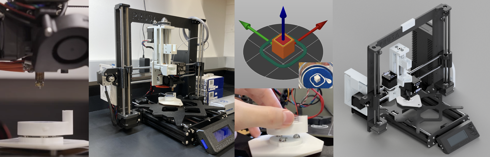
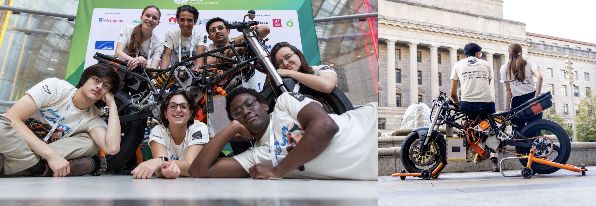
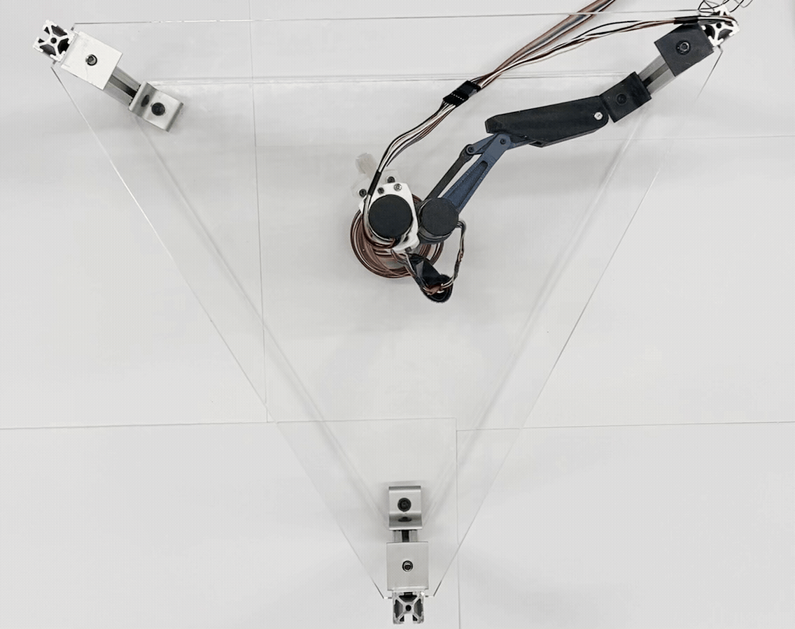
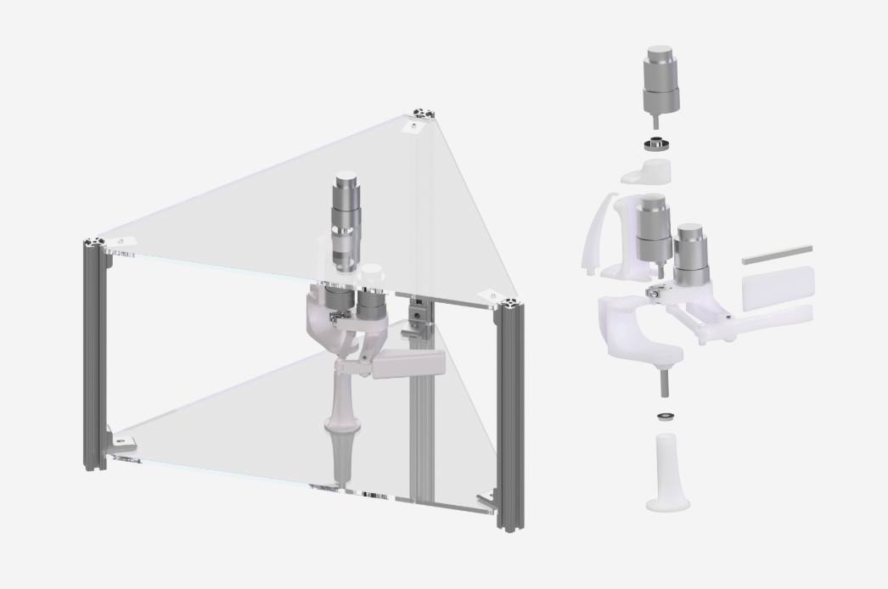
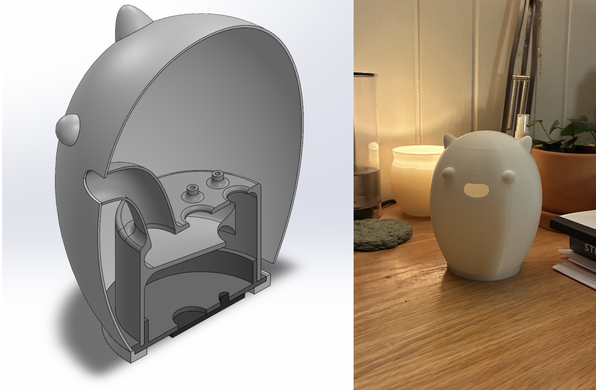
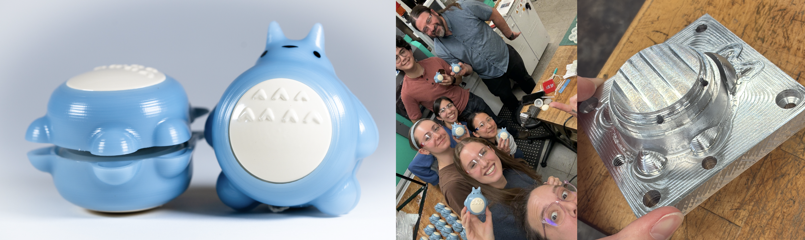

Other Projects
Please feel free to reach out for more details on any of the projects below!

An undergraduate research project on the design and fabrication of a multi-material 3D bioprinter capable of both FDM thermoplastic printing and FRESH bioprinting, to enable fabrication of complex multi-material and multicellular architectures with improved precision and reproducibility. This hybrid printer can switch between thermoplastic and hydrogel print jobs in seconds, with primary custom components including a print bed petri dish assembly with an embedded kinematic coupling, an integrative X-carriage that mounts both thermoplastic and hydrogel extrusion modules, a hydrogel extruder based on CMU's Replistruder 4, and a copper sheath extension for the thermoplastic extruder.

A project with MIT Electric Vehicle Team on converting a Ducati 900ss to a fuel cell-electric vehicle. Personal contributions focused primarily on mounting system design and fabrication for hydrogen fuel cell and storage tanks, system integration, and fuel cell characterization. We are grateful to have had the opportunity to test our custom build at Thompson Speedway Track , as well as to present it at the 2023 Hydrogen Americas Summit, the 2024 CES, and the 2024 World Hydrogen Summit. Thank you to the wonderful members of this team for some of the most memorable late nights of my undergrad spent designing, building, and occasionally breaking things in our garage space.


This project investigated the dynamics of a fouetté (a type of ballet turn), with the hypothesis that there exists an optimal trajectory for the lifted leg as it whips through the air that balances torque generation and inertia minimization, such that the fastest possible turn is achieved. Optimized trajectories were first tested in simulation, and then translated onto a custom hardware platform. When compared to a parameter sweep of simple, "hand drawn" trajectories, our optimal trajectory showed significantly improved performance. My primary role in this project was to design and fabricate our hardware platform, seen in these images. The apparatus is propelled entirely by the motion of the leg, with the upper motor serving only as a brake during the leg's wind-up.


A project for one of my electronics classes: an upgraded, candy-eating recreation of the beloved but discontinued IKEA nightlight, Spöka, of my childhood. A camera and Raspberry Pi within the assembly identify and scan incoming M&M's, and adjust the color of LEDs embedded in the ears to match it.

A team project involving the design and manufacturing of 50 yo-yos, with components joined by a press fit and required to pass a 4ft drop test. Along with other team members, my involvement ranged from mold design and machining for injection molding to thermoform die design and fabrication. I can proudly report that our design was voted "Cutest Yo-yo"—secretly our most important functional requirement all along.